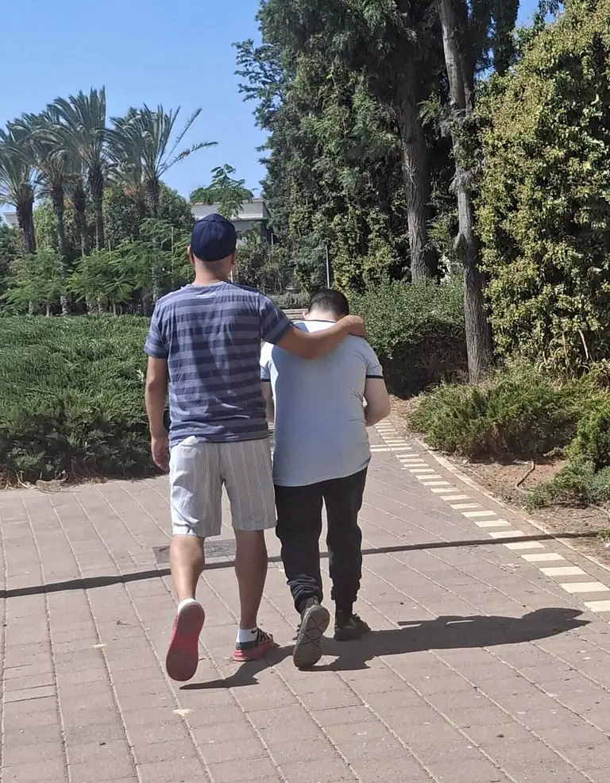
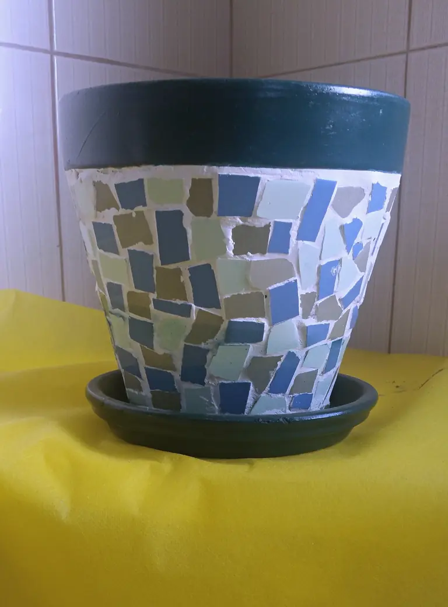
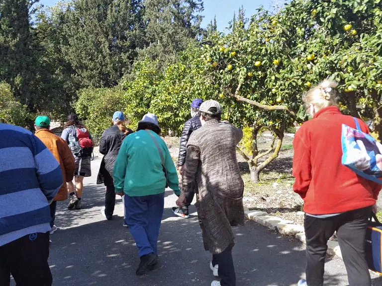
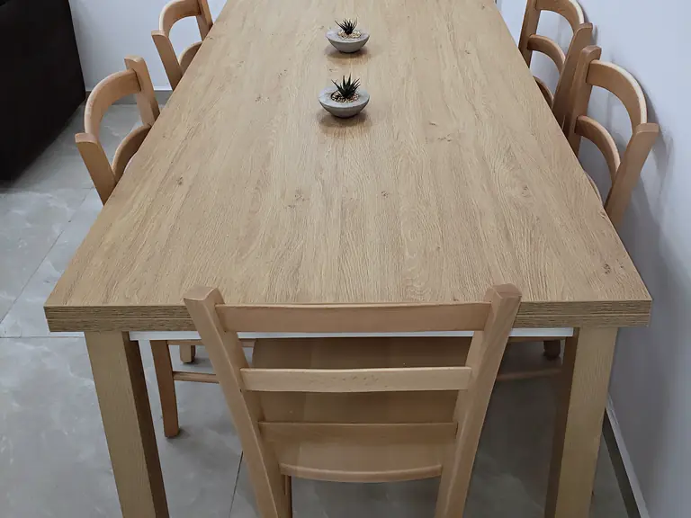
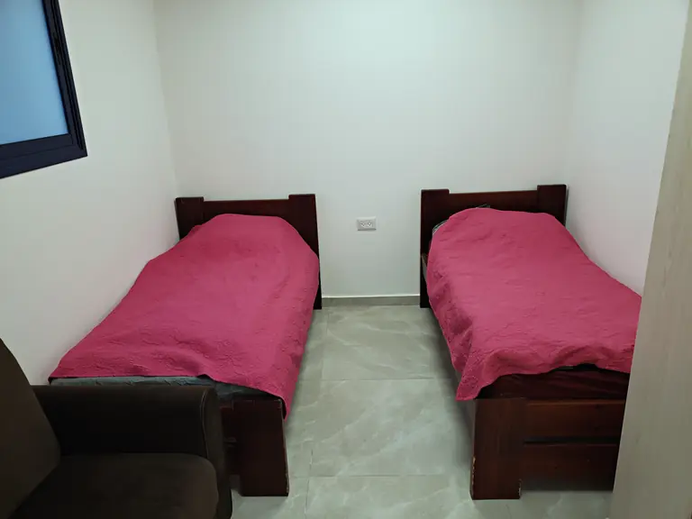
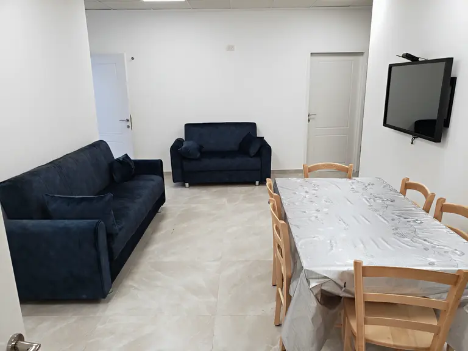

מערכת עיצוב · גרסה 0.3.2 · אב־טיפוס
„אותיות שגרים בהן”
חם, מכובד ושקט. נייר חם, דיו כהה, סגול האירוס מהלוגו, וגוונים מעבודות הפסיפס של הדיירים. שום דבר לא זז מעצמו: היוקרה באה מהאותיות, מהצבע, מהרשת ומהאוויר. כל צירוף צבעים לטקסט נבדק מול WCAG ברמה AA (ת״י 5568).
אותיות שגרים בהן.
חמש אותיות ששמותיהן מילים של בית — ב׳ (בית), כ׳ (כף), ס׳ (סמך), ל׳ (למד), ד׳ (דלת) — הן האדריכלות של האתר. החלל שבתוך האות הוא חדר, ושם חיות התמונות. האותיות עומדות במקום: לכל אות משקל אחד, תמיד. באתר עצמו האותיות לא מקבלות תוויות: השם שלהן נאמר רק בכותרות (בית, בכף היד, לסמוך, ללמוד, הדלת) ופעם אחת בקולופון.
ב׳ · בית · 600 — שער הבית. אותו משקל בשער של דף הבית, בשורות האינדקס ובשער של דף הבית למגורים.
כ׳ · כף · 440 — כף יד שמחזיקה עבודה אחת של הדיירים.
ס׳ · סמך · 380 — האות העגולה: המנדלה של הדיירים בתוכה, שלמה.
ל׳ · למד · 600 — האות היחידה שעולה מעל השורה, רק בתוך המרווח העליון של המקטע שלה: דרושים.
ד׳ · דלת · 300 — אות רחבה לכל רוחב המקטע, כמו האותיות שהסופרים מותחים בשורה. מצוירת פתוחה; טופס הביקור עומד בפתח.
ם · 300 — חלון ב„שמיים”.
אות עם חדר
התמונה נחתכת לפי החדר של האות (clip-path: inset), במשקל הקבוע של האות; שום דבר לא משנה אותו. כשאין תמונה, החדר מראה „שמיים שקטים”.



רכיבי v3.
שרטוט ונקודה
כל מקטע מתחיל באותו סדר: קו דק, כותרת, פתיח. הנקודה בכותרות היא אבן פסיפס מרובעת; ב־DOM נשארת נקודה אמיתית.
מתגי תצוגה
כפתורים עם aria-pressed, תווית גלויה ומילת מצב „פועל / כבוי”. מסילה 44×24 וידית מרובעת — בלי אנימציה: הידית קופצת למקום. הבחירה נשמרת ומוכרזת לקורא המסך.
שורת אינדקס
שורה שיש לבית שלה דף היא קישור אחד: ריחוף ופוקוס מראים את הרקע של השורה (שקיפות, 150ms) וקו תחתון של 2px בשם; החץ לא זז. שורה בלי דף איננה קישור, בלי חץ, וכתוב בה „דף מפורט בקרוב”.
- שורה עם דף: קישור אחדריחוף ופוקוס: רקע וקו תחתון.
- שורה בלי דףלא קישור, בלי חץ.סביבה רגועה · דף מפורט בקרוב

- 2מספרים על השרטוט, בלי כרטיסים
- 1957שנת הקמה
צבעים
צבעי בסיס לטקסט ולרקע; צבעי מותג לפעולות ולהדגשות; צבע בבלוקים — מקטע שלם בצבע אחד; צבעים „דקורטיביים בלבד” אינם משמשים לטקסט.
- א
- א
- א
- א
- א
- א
- א
- א
- א
- א
- א
- א
- א
דקורטיביים בלבד (לא לטקסט): --nh-clay-300, --nh-olive-300, --nh-sky-500, --nh-line.
בדיקת ניגודיות
היחס מחושב בדפדפן מתוך משתני ה־CSS עצמם (נוסחת WCAG). סף: 4.5:1 לטקסט רגיל, 3:1 לרכיבי ממשק ומסגרות פוקוס (1.4.11). קווים דקורטיביים אינם הסימן היחיד לשום דבר, ולכן אין להם סף. אותה טבלה מחשב scripts/contrast.py.
| דוגמה | קדמה / רקע | שימוש | יחס | AA |
|---|---|---|---|---|
טיפוגרפיה
כותרות: Frank Ruhl Libre (סריף עברי קלאסי) במשקלים 300, 400 ו־500 בלבד. גוף: Assistant (סנס הומניסטי). שניהם ברישיון SIL OFL 1.1, מתארחים מקומית — בלי Google Fonts CDN. תשע מדרגות, והקטנה שבהן היא 16px. אין נטוי ואין מרווח בין אותיות בעברית: הדגשה במשקל ובצבע בלבד; רק מספרים מקבלים −0.03em.
מרווחים וצורות
בסיס 4px. מרווח מקטע: --v3-pad = clamp(64px, …, 120px). קצב קבוע בכל מקטע: קו → 40px → כותרת → 20px → פתיח → 48px → תוכן. מכל גודל מסך המכולה עד 90rem; שוליים צדדיים בנייד: 16px.
- 1 · 4
- 2 · 8
- 3 · 12
- 4 · 16
- 5 · 24
- 6 · 32
- 7 · 48
- 8 · 64
- 9 · 96
- 10 · 128
בלי קשתות
אין מסגרות קשת, „גלולות” או כרטיסים מעוגלים. התמונה נכנסת רק לחדר של אות, או ל„הדפס” 4:3: חיתוך ישר עם קו דק, בלי שוליים ובלי צל. אף פעם לא לכל הרוחב ואף פעם לא מאחורי טקסט.

רדיוס אחד, שלושה קווים
רדיוס 2px לכפתורים, לשדות ולמתגים; לתמונות 0. בלי צללים, חוץ מהמסגרת של ה„הדפס” (0 0 0 1px).
- 1px דיו — השרטוט, תחתית הכותרת העליונה
- 1.5px דיו — ראש רשימה (הקו העליון של הרשימה הזאת)
- 1px „שיער” (דיו 40%) — בין שורות
תנועה
שום דבר לא זז מעצמו. נשארים רק שלושה דברים: צבע בריחוף ובפוקוס, הופעה רכה אחת של תמונות ה„הדפס”, ופתיחת אקורדיון. כל השאר מיידי: המתגים, תפריט הטלפון, לוח העוגיות, ההסכמה לסרטון והמעבר לעוגן (הפוקוס עובר לכותרת היעד). עם prefers-reduced-motion וב„מצב רגוע” גם ההופעה כבויה. מפרט מלא: prototype/STORYBOARD.md.
| מה | מאפיינים | משך ועקומה | אסימון |
|---|---|---|---|
| ריחוף ופוקוס | color, background-color, border-color, text-decoration-color; opacity (index rows) | 150ms ease | --nh-dur-1 |
| ההופעה האחת של ה„הדפס” | opacity 0 → 1, translateY(8px) → none (the photo only, not the caption) | 320ms cubic-bezier(.22, 1, .36, 1), once | --nh-dur-2, --nh-ease-out |
| אקורדיון | the “+” turns 45° | 200ms | — |
| טבעת פוקוס, עובי הקו התחתון | outline 3px, offset 3px; underline 1 → 2px | מיידי | — |
אסור: חלונות שנפתחים מעצמם, סליידרים וקרוסלות, פרלקסה, חטיפת גלילה ומקטעים נעוצים, גלילה אופקית, אפקטים של הסמן, אנימציה של אותיות בודדות, קפיצות, מונים רצים, לולאות, תלת־ממד. בניית האב־טיפוס נעצרת אם יש ב־CSS @keyframes, view-transition, @property, גלילה חלקה או position: sticky.
רכיבים
לחצו Tab כדי לראות את מצבי הפוקוס. כל רכיב לחיץ גדול מ־44×44px; כפתור רגיל 56px.
כפתורים וקישורים
מסגרת של 2px, רדיוס 2px. בריחוף משתנה רק הצבע; החץ לא זז.
קישור בתוך טקסט רץ עם קו תחתון.
פירורי לחם
התראות
תודה! הפנייה התקבלה.
נחזור אליכם בהקדם.
נמצאה שגיאה אחת בטופס:
שאלות נפוצות (אקורדיון)
איך מתחילים?
מתקשרים אלינו או משאירים פרטים בטופס. המחלקה הסוציאלית שלנו תסביר את התהליך ותתאם מפגש היכרות.
אפשר לבקר לפני שמחליטים?
כן. נשמח לארח אתכם ולהראות את המקום.
איך שומרים על קשר עם המשפחה?
ביקורים, ועד הורים פעיל וקשר שוטף עם הצוות.
גלריה: הדפסים 4:3
רשת של הדפסים בגודל אחד (3 / 2 / 1 עמודות), וכיתוב גלוי מתחת לכל תמונה. בלי לייטבוקס ובלי הגדלה בריחוף: תמונות חלשות לא מגדילים.

פינת האוכל המשותפת. 
חדר מגורים לשניים. 
הסלון המשותף.
הגדרות עוגיות
הלוח לא נפתח מעצמו: באתר יש רק עוגיות הכרחיות, וסרטון YouTube שואל בתוך הסרטון. הקישור „הגדרות עוגיות” בפוטר פותח את הלוח בתוך הדף, מיד אחרי הפוטר — בלי צל, בלי אנימציה ובלי לכסות תוכן, והפוקוס עובר לכותרת שלו. „שמירת הבחירה”, „סגירה” ו־Esc סוגרים אותו ומחזירים את הפוקוס.
רכיב: טופס מועמדות
הגשת מועמדות
ב־WordPress: שליחה דרך wp_mail() לכתובת שתוגדר בווידג׳ט, הגנת nonce, honeypot, מלכודת זמן והגבלת קצב. בבדיקות — רק לכתובת של אולג. קורות החיים נשלחים כקובץ מצורף ואינם נשמרים בספריית המדיה.
שדות של 56px עם מסגרת 2px; בריחוף ובפוקוס משתנה רק צבע המסגרת. שגיאות מופיעות רק אחרי שליחה, ושום דבר לא קופץ כשעוזבים שדה.
תודה! המועמדות התקבלה.
נעבור על הפרטים ונחזור אליך. (באב־הטיפוס הטופס אינו נשלח.)